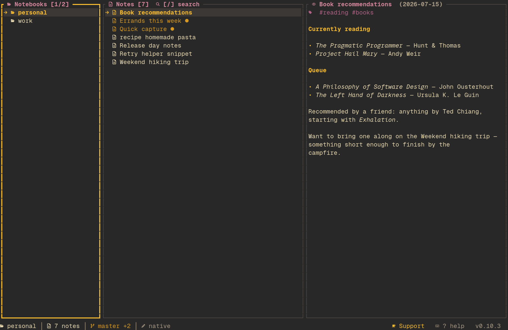

shiki-mcp now ships with shiki everywhere. The release tarballs/zip, both AUR packages, the Homebrew formula and both Scoop manifests install both binaries, so shiki agent connect works out of the box instead of pointing at a server the user still has to cargo install separately. shiki-mcp --version/--help work before any config is loaded, and a new CI package-smoke job builds both release binaries on every push.dry_run: true previews on the multi-file/destructive MCP tools. rename_note reports the new path plus every note whose [[wikilinks]] would be rewritten; move_note/move_folder report the resolved destinations and collisions; delete_folder/delete_notebook report the notes that would be destroyed. Dry runs never write and don't require confirm.shiki://index, shiki://notebook/<name> and shiki://note/<notebook>/<path> expose read-only notes to clients that support resources; weekly_review and inbox_triage prompts preload open tasks/daily notes or captures.shiki agent connect clients: Gemini CLI (~/.gemini/settings.json, GEMINI.md guidance), Zed (context_servers in settings.json), Codex (~/.codex/config.toml, format-preserving TOML merge) and VS Code's current Copilot harness (mcp-config.json/.mcp.json with "type": "stdio").shiki-mcp tests, including an in-process tokio::io::duplex MCP round trip covering tools/list, resources, prompts and a real tool call.shiki doctor and shiki agent status compare the shiki-mcp on $PATH against the running shiki and warn when a partial upgrade left them out of sync.shiki agent connect --all now includes Gemini CLI, Zed, Codex and VS Code; guidance is written to GEMINI.md for Gemini and AGENTS.md for everyone else.shiki agent connect codex is user-scope only (Codex only reads a project .codex/config.toml for trusted projects). vscode targets the current Copilot config rather than the deprecated editor-managed .vscode/mcp.json format.